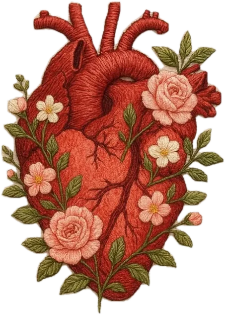

Medicine
Medicine is more than diagnosis and treatment plans. It is listening closely, learning endlessly, and showing up for people in their most vulnerable moment.
Through the systems
Seven plates, seven themes. Click any one to explore.

Rhythm & Circulation
“four chambers, one rhythm”
click to explore
- what I learned
- Infective endocarditis, taught as a tutorial in Medicine 1, and antiplatelet therapy in chronic coronary syndrome through a ticagrelor vs clopidogrel study in progress.
- where I met it
- Cardiology rotation at Meniet El-Nasr Central Hospital (October 2026): ECG, echo, central line, emergency defibrillation. ESC Council on Cardiovascular Genomics.
 Breath & Acute Care
“the tree that breathes”
click to explore
Breath & Acute Care
“the tree that breathes”
click to explore
- what I learned
- A case of COPD exacerbation with underlying myxedema coma, presented as a Semester 4 grand round.
- where I met it
- Chest teaching within Internal Medicine, Basic Life Support (NHCPS, 2023), open chest drain insertion on the Incision Academy course.
 Mind, Nerves & Signals
“where the questions start”
click to explore
Mind, Nerves & Signals
“where the questions start”
click to explore
- what I learned
- Pediatric brain tumors (tutorial), peripheral neuropathy (The Hidden Pain), and how little the public knows about multiple sclerosis.
- where I met it
- Semester 5 grand round, a risk assessment reaching 100+ students from 10 Egyptian universities, MS awareness study across Egypt, Jordan and Libya.
 Balance & Quiet Systems
“quiet, constant work”
click to explore
Balance & Quiet Systems
“quiet, constant work”
click to explore
- what I learned
- Chronic kidney injury, told through a grand round with a patient and doctor role play, and how blood pressure, heart and kidneys feed into each other.
- where I met it
- Semester 5 grand round (considered one of the best in the round). Hypertension and cardio-renal-metabolic workshop, Novartis Egypt, 2025.
 Signals & Chemistry
“small glands, big effects”
click to explore
Signals & Chemistry
“small glands, big effects”
click to explore
- what I learned
- Posterior pituitary disorders, taught as a tutorial in Medicine 2.
- where I met it
- PASID congress (Pan Arab Society for Interventional Endocrinology and Diabetes Technology, 2025).
 Whole-Body & Resilience
“the river that carries it all”
click to explore
Whole-Body & Resilience
“the river that carries it all”
click to explore
- what I learned
- Recent innovations in Hodgkin lymphoma diagnosis, presented as a poster at the university hematology conference (12 June 2023).
- where I met it
- Hematology within Internal Medicine and Pediatrics (hematology and BM transplant).
 Autonomy, Birth & Care
“where autonomy and care meet”
click to explore
Autonomy, Birth & Care
“where autonomy and care meet”
click to explore
- what I learned
- Ovarian cancer, taught as a tutorial in Gynaecology, and why informed choice in childbirth matters.
- where I met it
- Gynaecology and Obstetrics rotation (May to June 2026), the C-section reduction project, Novartis female health workshop.
Topics I tutored
Five tutorials I prepared and taught as slide decks, each part of a course.
Grand rounds and posters
Infection in immunosuppressed patients
Grand round.
Exacerbation of COPD with underlying myxedema coma
Grand round, case report.
The Hidden Pain: peripheral neuropathy
Grand round, plus a risk assessment for peripheral neuropathy based on the daily habits of medical students. It reached 100+ participants from 10 universities in Egypt.
Peeing Less, Worrying More: chronic kidney injury
Grand round with a patient and doctor role play. Considered one of the best in the round.
Recent innovations in Hodgkin lymphoma diagnosis
Poster presentation at the university hematology conference (12 June 2023).
Things I built
Caprini risk score assessment
A tool I developed for venous thromboembolism prophylaxis. It gives a Caprini score and the degree of prophylaxis recommended.
[Open the tool: link] ↗Research in progress
Study design, questionnaire development, literature review.
Literature review, study framework, manuscript preparation.
What pulls me: surgery, women’s health, neurology, public health, dermatology and endocrine — the doors I keep opening.